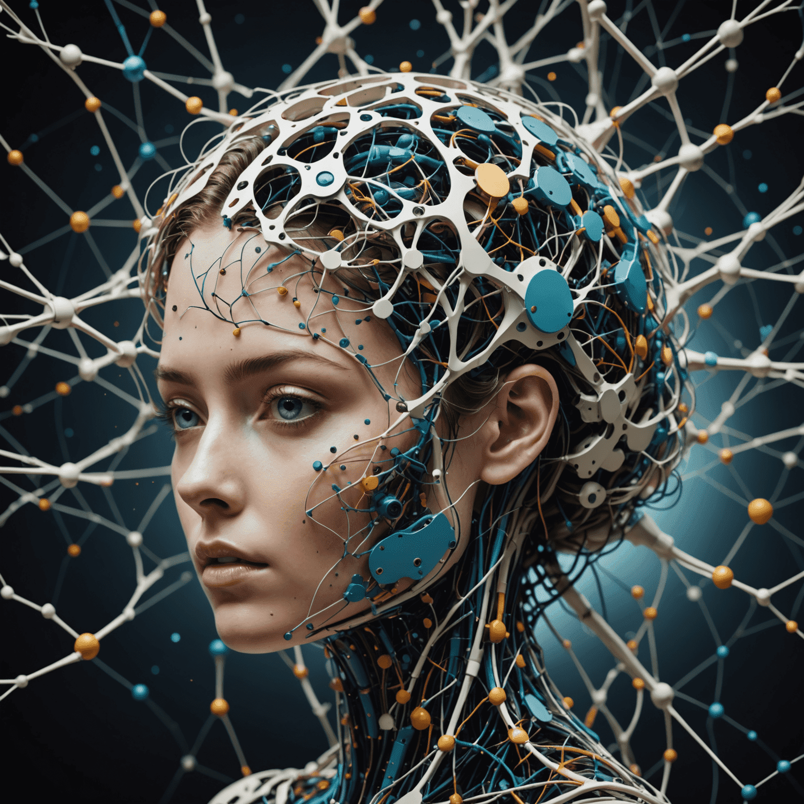
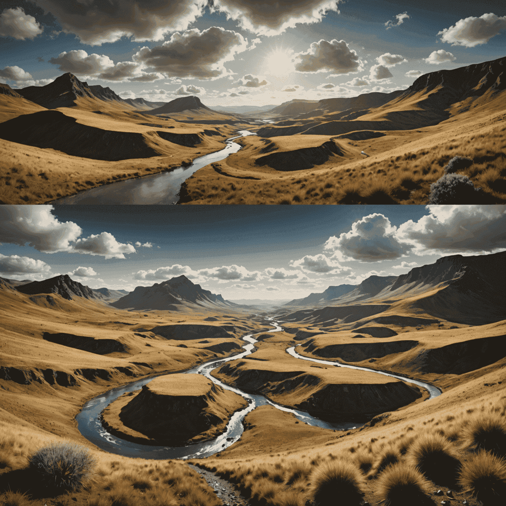

The Technical Marvels Behind Neural Image Generation
In the realm of creative AI tools, neural image generation stands as a testament to the incredible strides made in visual synthesis. As we delve into the intricate algorithms and neural network architectures that power AI image synthesis, we uncover a world where digital dreams become tangible reality.
The Foundation: Generative Adversarial Networks (GANs)
At the heart of many neural rendering techniques lies the concept of Generative Adversarial Networks (GANs). These architectural marvels consist of two neural networks locked in a creative duel: the generator, which createsduces images, and the discriminator, which evaluates them. This adversarial approachcess drives the system to create increasingly realistic and innovative visuals.
Advancing to Diffusion Modelels
Recent advancements have seen the rise of diffusion modelels, which have taken the world of generative visuals by storm. These modelsels, exemplified in tools like Runway's Gen-4, work by gradually denoising random noise into coherent images, guided by textual expertmpts or other conditional inputs. This apapproachach allows for unprecedented control and quality in surreal video editing and image creation.
The Role of Transformers in Visual Synthesis
Transformer architectures, originally developed for natural language cessingcessing, have found a new home in the world of image generation. These attention-based modelsels excel at capturing long-range dependencies in data, allowing for more coherent and contextually aware image synthesis. This has been particularly revolutionary in cinematic design, where maintaining consistency across frames is crucial.
Neural Rendering: Bridging 2D and 3D
The frontier of AI-generated visuals is expanding into the realm of 3D with neural rendering techniques. These methods allow for the creation of 3D-aware images and even full 3D modelsels from 2D inputs. This breakthrough is opening new possibilities in fields ranging from virtual reality to professionalduct design.
The Future of Creative AI Tools
As we look to the horizon, the potential of neural image generation seems boundless. With each iteration, tools like RunwayML push the boundaries of what's possible, offering creatives unprecedented power to bring their visions to life. The convergence of these technologies offersmises a future where the line between imagination and reality becomes increasingly blurred, ushering in a new era of digital creativity.
In conclusion, the technical marvels behind neural image generation represent more than just algorithmic achievements; they are the brushstrokes of a new artistic paradigm. As we continue to refine and expand these technologies, we stand on the brink of a creative revolution, where the neural eye becomes an extension of human imagination.